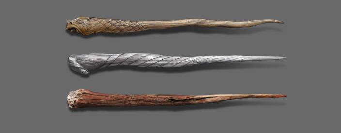

LENGTH AND FLEXIBILITY

Many wandmakers simply match the wand length to the size of the witch or wizard who will use it, but this is a crude measure, and fails to take into account many other, important considerations. In my experience, longer wands might suit taller wizards, but they tend to be drawn to bigger personalities, and those of a more spacious and dramatic style of magic. Neater wands favour more elegant and refined spell-casting. However, no single aspect of wand composition should be considered in isolation of all the others, and the type of wood, the core and the flexibility may either counterbalance or enhance the attributes of the wand’s length.
"Neater wands favour more elegant and refined spell-casting."
Most wands will be in the range of between nine and fourteen inches. While I have sold extremely short wands (eight inches and under) and very long wands (over fifteen inches), these are exceptionally rare. In the latter case, a physical peculiarity demanded the excessive wand length. However, abnormally short wands usually select those in whose character something is lacking, rather than because they are physically undersized (many small witches and wizards are chosen by longer wands).
Wand flexibility or rigidity denotes the degree of adaptability and willingness to change possessed by the wand-and-owner pair – although, again, this factor ought not to be considered separately from the wand wood, core and length, nor of the owner’s life experience and style of magic, all of which will combine to make the wand in question unique.
Written by Mr. Garrick Ollivander, wandmaker.